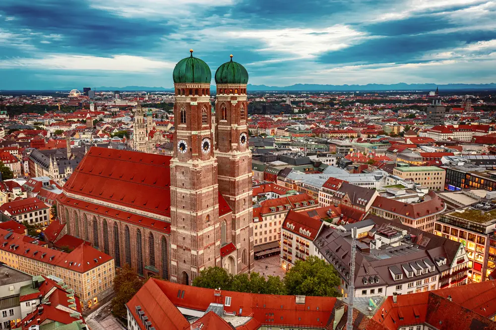
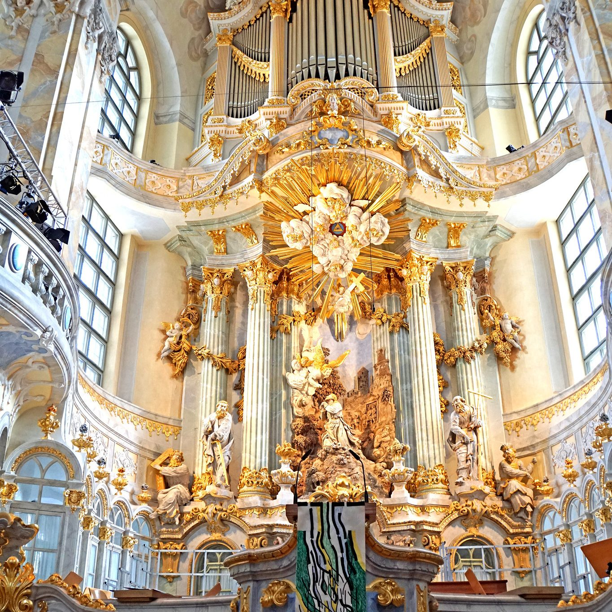

La Frauenkirche (Chiesa di Nostra Signora) è uno degli edifici più iconici di Monaco di Baviera e un simbolo della città. Situata nel cuore del centro storico di Monaco, questa maestosa cattedrale gotica è la chiesa principale della diocesi di Monaco e Frisinga e una delle chiese più imponenti della Germania.
La Frauenkirche fu costruita tra il 1468 e il 1488 su commissione del duca Sigismondo di Baviera. La sua imponente architettura gotica, con le sue due torri gemelle alte 99 metri, la rende facilmente riconoscibile nello skyline della città. La chiesa fu progettata dal maestro Hans Lutz, e le torri furono aggiunte in seguito, conferendo alla struttura un aspetto maestoso e simmetrico.
Il design della Frauenkirche è un esempio eccellente dello stile gotico tedesco. La chiesa ha una navata centrale molto alta, con splendidi soffitti a crociera e finestre gotiche che permettono alla luce naturale di inondare l'interno. L'interno della chiesa è relativamente semplice rispetto ad altre chiese barocche tedesche, ma offre comunque una bellezza discreta, con altari in marmo, sculture e dipinti che decorano l'edificio.
Le due torri gemelle della Frauenkirche sono uno degli aspetti più distintivi della chiesa. Con una vista panoramica sulla città, la torre principale offre una vista spettacolare di Monaco. Le torri sono anche legate a una leggenda popolare: si dice che l'architetto, temendo che il diavolo lo ingannasse, avrebbe costruito le torri con una particolare altezza per non essere accusato di aver sfidato Dio.
All'interno della Frauenkirche, nella navata principale, si trova una curiosa macchia sul pavimento che è nota come la "Impronta del Diavolo". La leggenda vuole che il diavolo, venendo a visitare la chiesa durante la sua costruzione, fosse furioso per il design dell'edificio. Infuriato, avrebbe lasciato un'impronta sul pavimento che rappresenta la sua furia. La macchia, visibile ancora oggi, ha affascinato i visitatori per secoli.
Oggi, la Frauenkirche è una delle attrazioni turistiche più importanti di Monaco. I visitatori possono salire sulle torri per ammirare la vista mozzafiato sulla città e sulla campagna circostante. La chiesa ospita anche numerosi concerti e servizi religiosi, ed è una meta popolare per coloro che desiderano conoscere la storia religiosa e culturale della città.